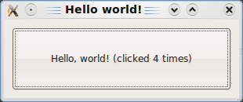
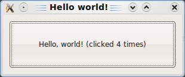

"Du HTML aux pixels"
A la découverte des moteurs de Chrome, Safari, IE et Firefox... mais pas que

@laurentperez
❤️ le Web
About you
Ratio iOS/Android/autres dans la salle ?
Qui s'est servi d'un navigateur web ce jour ?
WebKit, Blink, Servo, Gecko, Trident, Spartan, Presto ... ?
Multiple Personality Disorder
Mozilla/5.0 (Macintosh; Intel Mac OS X 10_12_6) AppleWebKit/537.36 (KHTML, like Gecko) Chrome/81.0.4016.0 Safari/537.36 Edg/81.0.387.0
Un moteur n'est pas un navigateur ⛵
Mais une suite de composants pour afficher et interagir avec une page web
- un composant pour charger des ressources réseau de manière intelligente
- un composant de règles CSS (ex: Media Queries, calcul de styles en cascade)
- un composant de dessin qui utilise une libraire graphique (ex: CoreGraphics pour Apple, Cairo GTK pour Linux/Win, Skia pour Android, HarfBuzz pour les glyphes ...)
- un composant pour éxécuter du JS (ex: JavaScriptCore sous WebKit, V8 sous Blink/Node, SpiderMonkey sous Firefox, Chakra sous IE/Edge)
- un composant pour inspecter et développer (ex: WebInspector, DevTools)
- un pilote pour jouer des tests auto, des conteneurs de cookies ou bdd, des masses de tests, une API pour extensions, etc...
oulala le 1er slide est déjà technique
... prenons du recul
Une analogie simple
Points communs avec le moteur Mercedes AMG F1 W0x
Slide 1 sur 80

Chapitre 1 : architecture des composants PU, MGU-H et MGU-K/KERS dans les homologations FIA
... ou on va plutôt parler du Web
What's up, Web ?
Tim Berners-Lee, Frystyk Nielsen, Bert Bos/Håkon Wium Lie (CSS/Opera), Robert Cailliau (W3C), Ian Hickson (HTML5)
Nielsen n'est pas que le co-auteur de HTTP/1.1, il a aussi co écrit SOAP - nobody's perfect
1991 : le Line Mode Browser en C (Nicola Pellow üë©)
1993 : donation de sa 1ère base de code en domaine publique pour fabriquer des navigateurs : libwww, qui sera supplée par libcurl
Car le 1er browser WorldWideWeb ne tournait que sur des systèmes NeXT propriétaires/ObjC. La donation donnera les ports MSDOS, Unix, Mac

Le 1er "design system" - composants textuels - sur 4 pages A4 : 15 balises HTML
assez peu de nouvelles balises ont été ajoutées
Fin 2019 : 1er groupe de standardisation de design tokens - W3C DTCG
tl;dr : utilisateurs et auteurs d'outils UX dans un groupe de travail du W3 = open Design Token format... avance rapide en 2020
What's up, Web ?
On a plusieurs navigateurs : Safari, Chrome, Firefox, IE, Opera, ...
... mais One moteur to rule them all ? Pas encore, et tant mieux


Dualité d'Apple et Google qui ont partagé un moteur commun jusqu'en 2013 : WebKit, né en 2001, issu du monde Linux
Mozilla, Microsoft et Opera avec leurs propres moteurs : Gecko (ex Netscape réécrit), Servo, Trident, EdgeHTML, Presto
... mais IE2020 utilise le moteur de Google : Blink, fork de WebKit
Il y a un peu plus que 5 navigateurs
Versions beta, alpha, embarqué, mobile, Linux, Mac, Windows, ...
Mais peu de moteurs différents : 5 majeurs


üåê One Web. Desktop et mobile üåê
Sauf que le mobile demeure cloisonné - donc hétérogène
Apple interdit tout autre moteur que le sien dans les apps, Chrome et Firefox iOS ne sont que des coquilles autour de WebKit
2.5.6 Apps that browse the web must use the appropriate WebKit framework and WebKit Javascript.Samsung, Sony, HTC & all utilisent le moteur de Google per Android ... mais Firefox propose GeckoView alternative non mouvante à WebView pour toute PWA / webapp avancée
Huawei qui pourrait forker WebKit ou Blink
KaiOS (Inde, Brésil) utilise un fork du moteur de Firefox Mobile B2G
Opera Mini présent sur certains terminaux Kai et reboots Nokia 3310/8810
5 moteurs sur le marché
| Moteur | Dans / chez |
|---|---|
| WebKit | Safari/Mail.app, Epiphany (Linux), Samsung, Sony, Nintendo |
| Blink | Chromium/e, Opera, Vivaldi, Brave |
| Gecko/Servo | Firefox, Fennec/Fenix (mobile), Reality (VR), Thunderbird |
| Trident/Spartan/EdgeHTML | XBOX, IE < 2020 |
| Dérivé FirefoxOS/Opera Mini | smart feature phones KaiOS % ~iOS en Inde, Opera Mini est un moteur cloud |
Parts de marché des moteurs
Sur mobile domination à 95% du duo WebKit/Blink. Trident (Windows Phone) est mort. Firefox/Opera Mobile pour pays émergeants.
Sur desktop le % est un peu différent : Firefox + IE ont ~10% du marché
Sur l'embarqué Consoles, Smart TV, Kiosques : WebKit devant Blink
Corée du Nord : fork de Gecko, 'Naenara' (Mon Pays) pour visiter des sites réservés et watermarker
ü•Ñ Apart√© sur le fork Blink (Google) ü•Ñ
Mi 2013 Google décide de diverger de WebKit commun à Safari et Chromium et le forke en Blink
Raisons de fond liées aux roadmaps divergeantes, au refus des -prefix CSS, au refus originel du code MathML, au refactoring core
... à la concurrence avec Apple : Google était co contributeur à ~50% de WebKit, tensions de gouvernance
Blink est moteur de Chromium/Chrome, Opera, Silk, UI Battle.net, Steam, Spotify post WebKit, IE 2020
c'est aussi un "Google Show" (cit. Sony)
Microsoft qui lâche EdgeHTML pour Blink
“MS : I very recently worked on the Edge team, and one of the reasons we decided to end EdgeHTML was because Google kept making changes to its sites that broke other browsers, and we couldn't keep up.
For example, they recently added a hidden empty div over YouTube videos that causes our hardware acceleration fast-path to bail (should now be fixed in Win10 Oct update)
Moz : YouTube page load is 5x slower in Firefox and Edge than in Chrome because YouTube's Polymer redesign relies on the deprecated Shadow DOM v0 API only implemented in Chrome”
Youtube + Chrome = pubs = max üí∞ üí∞ üí∞ pour Google
MS a indiqué ne pas vouloir forker Blink et veut réouvrir des API bloquées pour les adblockers (reddit AMA Juin 2019)
Mozilla en tension avec Google : ils n'iront pas vers Blink, ils ont déjà un moteur Servo next-gen
Microsoft et le mobile (pliable)
... proposition récente de spec pas anodine : Web Segments API
We propose a new concept of Window Segments that represent the regions (and their dimensions) of the window that reside on separate (adjacent) displays. Window Segment dimensions are expressed in CSS pixels and will be exposed via a JavaScript API that allows developers to enumerate segments, including about regions that are occluded.

C'est pour les Foldables : évolution pour donner le multi écrans à CSS et JS (Surface Duo) : @media (spanning: single-fold-vertical) .adjacent { flex: 1 1 env(fold-left) }
Gecko ?
Echec de percée dans le mobile - travaux repris par KaiOS
Pas d'embarqué !
Le moteur Servo déverse dans Gecko ses meilleurs morceaux : WebRender, Pathfinder
Firefox, Firefox Preview/Fenix, Firefox Reality
✈️ Un moteur n'est pas un navigateur. Un navigateur se sert d'un moteur. ✈️
Airbus et Boeing partagent des moteurs General Electric, Rolls Royce, Trent : ce n'est pas le même avion == pas le même navigateur
Une compagnie peut changer l'intérieur de l'avion (Singapore, Qatar Airlines, Air France = Apple, Google, Samsung, Sony)
Des mécanos connaissant bien le moteur changent de boite : porosité des devs Apple/Google/Mozilla, Samsung/Sony/Nintendo
Le moteur de IE change pour Blink, ce n'est pas tout IE qui change : pour les pilotes - nous - peu change
Blink et WebKit hors des navigateurs
Embarqués dans des logiciels assez connus
Players Spotify, Sirius, Mail.app/iWork/iTunes/App Stores
UI Steam, Battle.net, Kindle Amazon
consoles Sony, Nintendo, outils Adobe (AEM Forms)
Nintendo Switch hackée à cause d'un vieux WebKit - 6 mois de delta
automobile, Smart TVs, kiosques (Access NetFront) ...
⚙️ Le moteur WebKit & les autres ⚙️
Bref historique
- 1990 Naissance du Web au CERN et de WorldWideWeb - 1er navigateur
- 1994 Naissance de Netscape Navigator issu de Mosaic - 2nd navigateur
- 1998 Naissance de KHTML/KJS issus de Konqueror (KDE, Linux), Netscape s'open source et crée Mozilla (Mosaic killer)
- 2001 Apple forke KHTML/KJS en WebKit : WebCore + JavascriptCore. Préféré à Gecko/Netscape
- 2003 Naissance de Safari sous WebKit, AOL crée la Fondation Mozilla, à but non lucratif
- 2005 Apple Open Source tout WebKit - pas seulement WebCore et JavascriptCore
- 2007 L'iPhone sort avec Safari 3, vision de Jobs : les Apps seront des pages HTML
- 2008 Google lance Android et Chrome sous WebKit, Apple lance le 1er SDK iOS... il n'y aura pas d'Apps HTML... avant les PWAs
- 2009 Proche divorce "on reste amis" entre Apple et KDE, code d'Apple était difficile à backporter en Open Source
- 2013 Mozilla crée Servo, Google forke WebKit en Blink, Opera abandonne Presto pour Blink, WebKit devient trademark Apple.
- 2014/5 Microsoft remplace Trident par EdgeHTML
- 2016/19 CSS4, CSS Houdini, Progressive WebApps, WebPayment, WebAssembly, Animations API, WebXR, ...
- Juin 2019 Les groupes de standardisation HTML du W3C (Berners-Lee, üê¢, non lucratif) et du WhatWG (fabricants, üêá, pognon) fusionnent
- 2020 "Year of Privacy" pour tous les fabricants üîí (Intelligent Tracking Prevention)
- Manifestes des fabricants pour restreindre les Cookies tiers et techniques de pistage
- https://webkit.org/tracking-prevention-policy/
- https://developer.mozilla.org/en-US/docs/Mozilla/Firefox/Privacy/Storage_access_policy
- ... mais il existe des parades
Mozilla reste en pointe sur les respects des usages - ils ont sû diversifier leurs revenus de la search bar entre Google, Yahoo, Yandex, Baidu, Amazon pour ne pas dépendre que de Google
Si la Fondation Mozilla est non lucratif, Mozilla Corporate est un business mais particulier : pas d'actionnaires, pas de dividendes, pas de stock options
Sources d'innovation ?
üí∞ Probl√®me du poids de Apple, Google, Microsoft üí∞
Les compagnies les plus riches du monde Forbes 2019Les revenus de Moz proviennent de moteurs de recherche : par effet de bord, de la publicité (Ads, Bing, Baidu)
Brave browser qui propose une rémunération des ads en cycle fermé via cryptomonnaie - Eich, ex CEO Moz, inventeur du JS
... le modèle économique des 3/4 des fabricants reste empreint d'ad-tech et de consumérisme physique ou digital
Les acteurs communiquent ouvertement sur l'avenir de leur moteur
Les mentalités ont évolué. Possible privacy wars au lieu de browser wars
- WebKit.org (OSS) : https://webkit.org/status
- Blink : https://www.chromestatus.com/features
- Edge : https://developer.microsoft.com/en-us/microsoft-edge/platform/status
- Gecko : https://blog.nightly.mozilla.org
- Safari : https://developer.apple.com/safari/technology-preview
- nb : Apple par Culte du Secret ne commentent jamais en _d√©tails_ sur qu'ils vont ajouter pour iOS/iPadOS, les curieux.ses peuvent lire les commits signés des devs @apple.com https://github.com/WebKit/webkit/commits/master
Contributeurs WebKit/Blink principaux
git shortlog -e -s -n Apple, Google avant Blink, webkit.org (OSS), Adobe, Igalia, Samsung, Sony, BlackBerry, Nokia, Intel
Blink : Google, Opera, Adobe, Igalia, Samsung, Intel
Yoav Weiss (auteur français de <img srcset> <picture>)
... Igalia kezako ?
Igalia
Ex ou courant de GNOME/Linux, team de consultants experts et commiters WebKit/Blink/Qt/GTK, pour embarqué (voitures, panneaux pub, bornes, IoT...)
ont entre autres implémenté CSS Grid dans Webkit+Blink, financés par Bloomberg, qui aime bien les grilles avec des chiffres dedans
Ils forment un pont entre WebKit et Blink car travaillent sur les 2
üá™üá∏ La Corogne - tout ne se cr√©e pas dans la Valley
C'est open source
Si des fabricants qui font des revenus sont derrière Blink, WebKit, Gecko/Servo, le code lui reste libre
Les fabricants partagent une suite de tests de non reg : WPT Web Platform Tests.
Le fameux ACID test est là (Ian Hickson, co rédacteur de CSS2, mainteneur de la spec HTML5... ou Ken Kesey, LSD toussa)
C'est pas /si/ difficile de contribuer : DevTools/WebInspector est la porte d'entrée la plus aisée, avec les traductions
... petite plongée dans WebKit
git clone webkit
https://www.webkit.org/building/checkout.html
4 GB. 35000 tests. 900MB de sources C++, 2/17MLoC, 215000 commits. Projet XCode ou Visual Studio
Fun fact : ~70% des 4GB sont des tests et ressources de tests (pages HTML, images, vidéos, audio, fichiers JS/CSS)
25 minutes de compile sur un très bon CPU
dedans : WebCore, JavaScriptCore, WebInspectorUI, WPE, WTF, WK2, MiniBrowser, DumpRenderTree, ...
üîå Une base commune et des ports üîå
Pas un WebKit unique. Un port parle aux APIs natives plateforme (ex: API de dessin, de réseau, de hardware dédié ...)
- OSX/iOS port (Safari/Mail/AppStore/iWork + CoreGraphics)
- old Android port (Stock Internet browsers/Chromium < Blink + Skia)
- GTK port (Linux Gnome Epiphany browser + Cairo)
- Qt port (Spotify Player < Blink, wkhtml2pdf)
- WPE port (micro moteur pour embarqué IoT, Smart TVs, Kiosques, Automobile)
- EFL port par Samsung (TizenOS, Watch/Smart TVs)
- EA : moteur de l'UI de Sim City 2K, devenu fork EAWebKit (FIFA, NHL, Apex)
- Amazon : le lecteur d'ebook Kindle < Blink, Silk dans le cloud AWS
- Sony : UI de la PS4 en WebGL, PSN Store, browser in-game
- Nintendo : browser Nintendo Store WiiU et Switch
- QNX port (BlackBerry) : Audi, BMW, Ford, Honda, Porsche, Toyota, Volkswagen
Ports de Sony et EA
Commits ou publient les sources partielles de leurs changements
Q @ SONY : “Why did you choose WebKit?”
Started before the Blink branch.
(...)
Chrome is the "Google Show", not good opportunities to contribute due to their army of engineers banging on it.
WebKit's strategy is focused on performance and small footprint. This is critical for PS4 and devices.
Blink is more about feature-feature-feature”
EAWebKit : https://gpl.ea.com/eawebkit.html : sources du fork pour PC/XBox/PS4, publiées en .zip à chaque sortie de jeu
UI de SimCity2K : How to Implement AAA Game UI in 100% HTML and JavaScript (GDC 2015)Pas de signaux de contribution de Nintendo, hackés + Culte du Secret... à la Apple


Exemple de ports pour le rendu graphique : https://trac.webkit.org/browser/webkit/trunk/Source/WebCore/platform/graphics?order=date&desc=1/
Une base commune pour : parsing HTML/CSS/SVG/MathML & styling/layout (WebCore), JS (JavaScriptCore), GraphicsContext (délègue le rendu à un port)
Des ports pour : spécifique OS (pile graphique ou réseau), image decoding, liens hardware (GPU, orientation, geoloc, battery, vibration, touch inputs, senseurs lumière/pression/paiement, ...).
Présence de flags lors du build : #if ENABLE(PLATFORM_IOS)(...)
C'est le même moteur dans des chassis et câblages - très - différents.
C'est pour ça qu'il y a des différences de comportement ou bugs
Pas de notion de ports sous Blink
Graphics Context delegate
WebCore n'a pas de look - un navigateur oui : à la fois son UI mais aussi ses styles CSS par défaut
Le moteur délègue à un tiers (GraphicsContext) pour afficher les pixels : dessine moi un bouton
 

Ce tiers utilise la pile graphique du port : look Apple, Android, Windows, Linux, Sony, Nintendo, ...
WebKit : son noyau WebCore (1/2)
Les étapes de rendu - tous moteurs
mise en 2 arbres du HTML et CSS (parsing)
calcul des styles depuis la cascade CSS (styling)
calcul de la mise en page positions x/y (layout)
mise en calques de la mise en page et dessin (painting/compositing)
post-dessin, le JS peut altérer les 2 arbres via bindings (JavascriptCore)

WebKit : WebCore (2/2)
Pour réseau, HTML, CSS, SVG, MathML, Canvas
rappel : HTMLDocument != SVGDocument. HTML != MathML
Fait le parsing aidé par un preload scanner, le styling le layout et le dessin mais pas le café.
Le layout c'est le calcul de la position et taille d'un élément : une boite rectangulaire. Un parent doit layout() ses enfants pour connaître sa propre hauteur/largeur : récursivité
Un layout fini c'est des boites dans des boites, une mise en page
Les boites sont rangées en calques puis dessinées et paintes
Pour savoir comment placer les boites et les dessiner, le moteur ne fait que suivre les specs.
üìö Specs ? üìö
Une spécification n'est qu'un document HTML avec des schémas (WebIDL) qui décrit comment faire les choses
En rédaction collaborative, elles sont toutes sous github
Outil open source de rédaction de specs : ReSpec, outil du W3C : https://github.com/w3c/respec . C'est un script JS et CSS dans une page HTML
Méconnu mais excellent pour toute rédaction de document technique, pas seulement pour des specs web (vs Word/LaTeX)
Voir les specs comme un super Wikipedia du web - très dense
Spec exemple : Web Auth

Un cas industriel & créa particulier
Les specs sont publiques ! (ex: https://github.com/w3c/ServiceWorker/issues)
Nimporte qui peut y contribuer, leurs auteurs répondent - en général
Les fabricants/OSS implémentent ou non les specs selon leur propre roadmap
Les specs sont une prédiction - non garantie - de ce qui va arriver dans les navigateurs et WebViews pour app natives
Suivre @intenttoship pour savoir quand ça va arriver sous Firefox ou Chrome
Suivre les commits WebKit pour savoir quand ça va arriver sous Safari
Quelques travaux en cours
Très publics : https://bit.ly/blinkintentsCSS Houdini (accès poussé au moteur CSS via JS)
Web Share API (linkedin, insta,...)
Shape Detection API (code barre, visage, texte)
SMS Receiver API, Contact API (ship !)
Payment API (GooglePay, ApplePay dans le browser)
Mise en valeur des sites PWA acceptées dans les App Stores
SVG dans les favicon (! shipped CR80)
remplacement de <iframe> par <portal> (Google I/O 2019)
Voir les travaux
Activer les 'expermimentals features' sous Chrome Canary ou Safari Technology Preview
MERCI